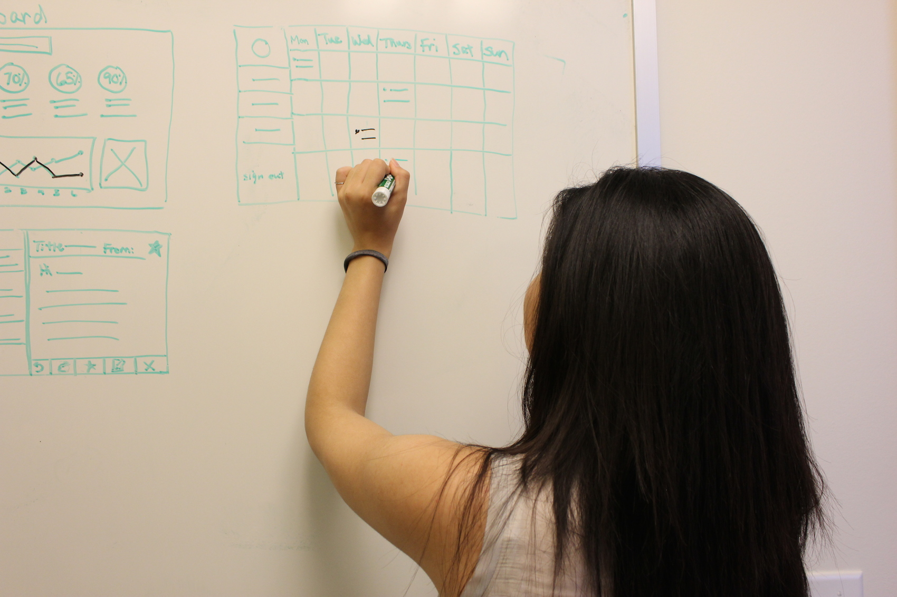

Note: Due to potential firm policies, I do not post my work online, but please email me if you would like to see a selection of what I can share.
In the past two years, I worked under the User Experience team delivering applications to clients on both web and mobile platforms, and have also done internal projects on other hardwares such as Google Glass and Beacons. I have worked across the entire product development spectrum end-to-end, from ideation, creating low to high fidelity mockups, to implementation of my designs in code and collaborating cross-functionally to have the features released. Additionally, I also picked up product management responsibilities to drive larger scale projects to completion at higher velocity and product quality.

Here are some of my work experiences:
- Mobile user experience work for one of the largest healthcare provider and payer in the country. This includes working on features related to pharmacy refills, touch id, and messaging platform between doctors and patients.
- Product management and technical advisor of an offshore dev and testing team of 10 people for the same healthcare company. Some of my responsibilities include, gathering business requirements for implementation, attending daily stand-ups, ensure timely product delivery using Agile Methodologies, quality assurance of our deliverables and product coordination across other business, design, dev and testing teams within the mobile team.
- Created high-fidelity designs on incident reporting and tracking app for a large oil and gas company that was taken to full implementation and delivered to the client.
- User experience design and front-end development of an internal devOps team site. Site was demoed to numerous directors and partners with strong positive feedback.
- Google glass development in Android Studio of a warehouse management app concept.
“I have worked across the design process spectrum from ideation, creating low to high fidelity mockups, to implementation of my designs in code and collaborating cross-functionally to have the features released.